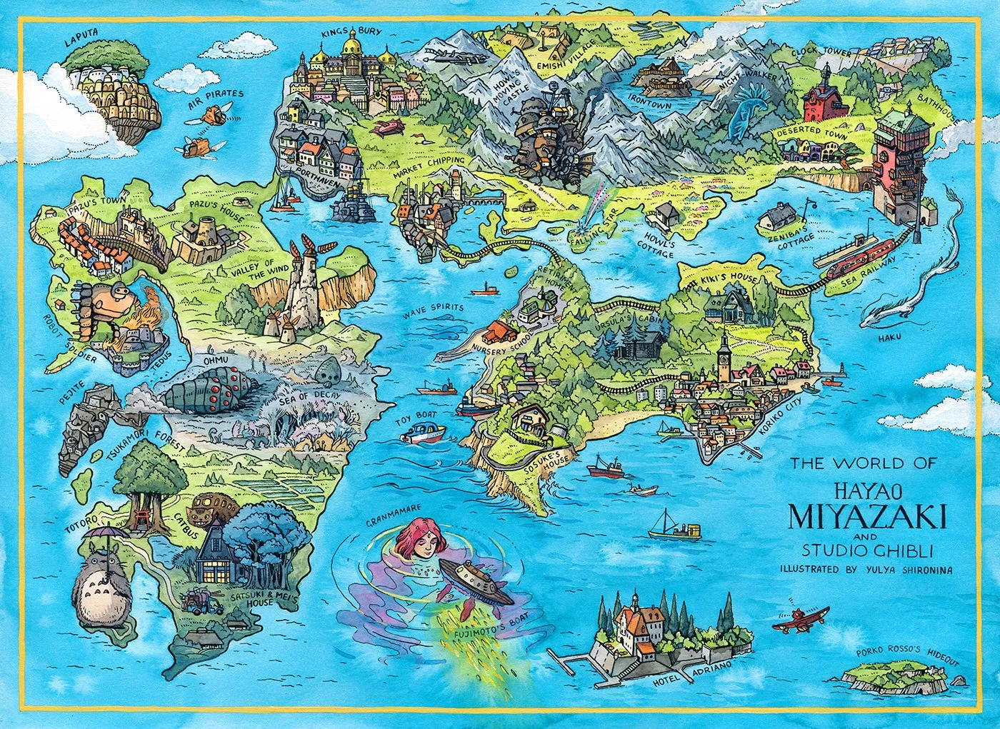
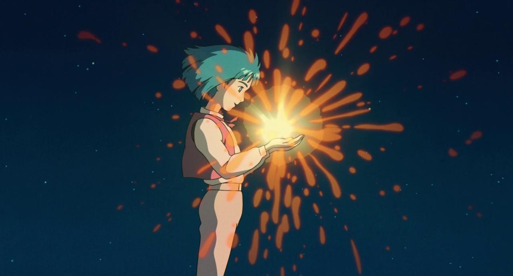

Written by Marina Meloni • 2 min 30 read
In the enchanting world of Hayao Miyazaki's "Howl's Moving Castle," the art of cartography takes on a whole new dimension. The film weaves a tapestry of complex landscapes and magical places that Howl, the enigmatic sorcerer, traverses with his astonishing abilities. To delve deeper into this cartographic masterpiece, one can turn to the French book "Hayao Miyazaki: Mapping a Universe," which offers profound insights into the complexity of the film's world.
At the heart of the story, the moving castle itself, is a symbol of ever-changing landscapes and the dynamic nature of the film's setting. This fantastic mobile fortress wanders through lush meadows, bustling markets, and even surreal views of the Desert, reflecting the deep connection between magic and the geography of the world.
One of the most remarkable places in the "Howl's Moving Castle" universe is the Marsh, where Howl occasionally goes to escape the bustle of the outside world. In this remote and otherworldly marsh, Howl's changing emotions manifest as bizarre and ethereal creatures. The Marsh is a testament to the film's cartography mastery, where geography reflects the inner landscape of its characters.
Mapping of Miyazaki's world by Yulya Shironina.
The town of Porte-Aubert, with its bustling streets and vibrant atmosphere, serves as a striking contrast to the desolation of the Desert. This location highlights the film's ability to build a world, with a detailed cartographic representation of a lively urban center.
The Desert, a sinister and menacing place, further illustrates the film's complex cartography. Howl's reluctance to engage in the war reflects the bleakness of this region, emphasizing the correlation between geography and character choices. The depiction of the Desert in the film provides a visual depiction of the consequences of conflict.
The French book "Hayao Miyazaki: Mapping a Universe" offers valuable insights into Miyazaki's world-building techniques. It highlights the intricate relationships between places and characters, drawing attention to how the landscape affects their choices and evolution throughout the story. The book not only enriches our understanding of the film but also deepens our appreciation of the art of cinematic cartography.
Photo from the film, landscape.
In conclusion, "Howl's Moving Castle" is a testimony to the complex cartography of a magical world, beautifully brought to life by Hayao Miyazaki. This unique blend of magic and geography offers viewers a captivating and immersive experience. The locations in the film's universe, whether the Marsh, Porte-Aubert, or the desolate Desert, are integral to the storytelling, highlighting the relationship between the characters' journeys and the world they inhabit. With the help of "Hayao Miyazaki: Mapping a Universe," fans can further explore the depth and complexity of this captivating world and appreciate the art of cinematic cartography in all its splendor.
next article